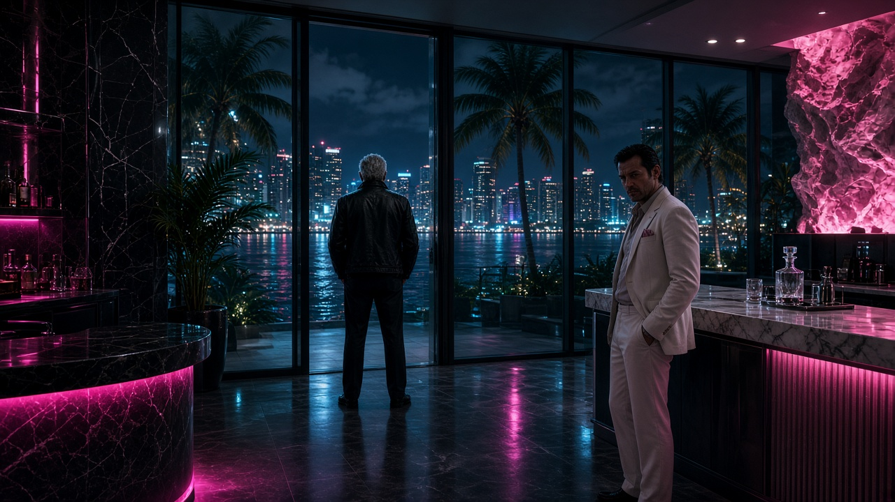

GTA 6 characters (spoilers)
Is Niko Bellic in GTA 6? | Peekhole

Spoiler warning: this covers a late-story surprise.
Short answer: yes. Niko Bellic, the hero of GTA IV, shows up in GTA 6's Chapter 5 during the story mission Taking Liberties. Michael Hollick, his original voice actor, plays him again.
Where does Niko appear?
Beebom says he turns up at the Vice City penthouse of a rich shipping boss named Giorgio, who is in trouble over a seized cocaine shipment. Niko comes to lean on him. He appears in two cutscenes, and G2A News says he crosses paths directly with Jason and Lucia's job.
What does he look like now?
Older. He has gray hair, but the voice and the tough-guy attitude are the same. His entrance even plays a short nod to GTA IV's famous theme, "Soviet Connection."
Can you play as Niko?
No. He isn't playable. It's a cameo with a small part in the story, not a new main character.
Why didn't the credits spoil it?
Rockstar listed Hollick as "The Hitman" instead of Niko Bellic, so reading the credits early wouldn't give it away. G2A News also notes that Kotaku saw Niko in its own playthrough, so this is confirmed, not a rumor.
Sources
- Beebom: Is Niko Bellic in GTA 6? Answered
- G2A News: Niko Bellic returns in GTA 6
- PC Gamer: Is Niko Bellic in GTA 6?
- Game8: Is Niko Bellic in GTA 6?
Peekhole take: Niko waited 18 years to visit Vice City and he still showed up on business. Some men just don't know how to relax.